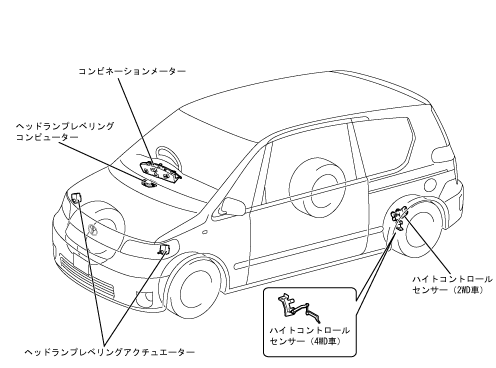

オートレベリング構成
●
オートレベリングシステムは，ヘッドランプレベリングコンピューター・ハイトコントロールセンサーなどにより構成されています。

オートレベリングシステム主要構成部品一覧
構成部品
機 能
ヘッドランプレベリングコンピューター
ハイトコントロールセンサーおよびコンビネーションメーターからの信号により車両姿勢と走行状態を判断し，状態に応じてヘッドランプレベリングアクチュエーターの制御を行います。
ハイトコントロールセンサーの異常を検出すると，コンビネーションメーター内のヘッドランプレベリングウォーニングインジケーターランプを点灯させます。
ヘッドランプレベリングアクチュエーター
ヘッドランプレベリングコンピューターからの制御信号により，ヘッドランプのリフレクターを上下方向に駆動します。
ハイトコントロールセンサー
車高の高低を検出し，ヘッドランプレベリングコンピューターに車高変化信号を出力します。
コンビネーションメーター
ヘッドランプレベリングウォーニングインジケーターランプを内蔵しています。
車速信号をヘッドランプレベリングコンピューターに出力します。
 オートレベリングシステム主要構成部品一覧
オートレベリングシステム主要構成部品一覧